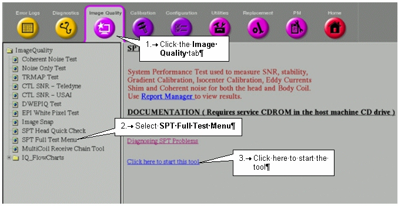

Proprietary to General Electric Company
Direction 5440000, Rev# 5
Signa HDxt Service Methods
Module Version 1.0, Version Date 5/15/07
Proprietary to General Electric Company |
Once phantoms are positioned and landmarked, you can access SPT via the Service Browser by following the steps on Illustration 1.
Illustration 1: Accessing the SPT Full Test Menu

The SPT Full Test Menu and SPT Head Quick Check selections initiate a hierarchical menu system that guides you through the selection of available test options. Periodic status updates occur while SPT is running to ensure that the test is progressing, and that the system has not hung.
SPT can be aborted at any time. If you abort the test before completion, valid test results that were created prior to the abort are preserved. See Troubleshooting, Utilities, for additional information relating to utilities available with SPT for clearing conditions that may be present upon an untimely abort.
The ability to specify multiple passes of SPT is provided to permit extended testing of the system during installation, bay staging, or intermittent problem troubleshooting.
For TwinSpeed, the tests must be repeated for each GradMode; in one session by selecting Whole & Zoom, and in separate sessions by selecting only one GradMode.
Test options for clinical users are limited to: Quick Check, All Tests except Shim, and All Tests. Field engineers and in-house service engineers have the clinical user's options, plus the choice of logically grouped individual tests (see Table 1). Option availability is determined by the presence of valid security keys.
Table 1: SPT Option Availability
| Test | Coil and Phantom | Quick Check | Calibration Check | Performance Check |
| Center Frequency | Head and Split Head Coil Phantom | Yes | Yes | No |
| Gradcal | Head and Split Head Coil Phantom | Yes | Yes | No |
| Z-Isocenter | Head and Split Head Coil Phantom | Yes | Yes | No |
| SNR | Head and Sphere | Yes | No | Yes |
| Stability | Head and Sphere | No | No | Yes |
| Coherent Noise | Head and DQA-III or Split Head Coil Phantom | No | No | Yes |
| Shim | Body and LVShim | No | Yes | No |
| Eddy Currents | Body and Sphere | No | Yes | No |
| System Gain | Body and Sphere | No | Yes | No |
| SNR | Body and Sphere | No | No | Yes |
| Stability | Body and Sphere | No | No | Yes |
After you’ve chosen options and started the test, data collection and processing proceed without further user input (i.e., you are not required to select protocols, prescan, scan, reposition phantoms, or initiate data analysis processes while SPT is running).